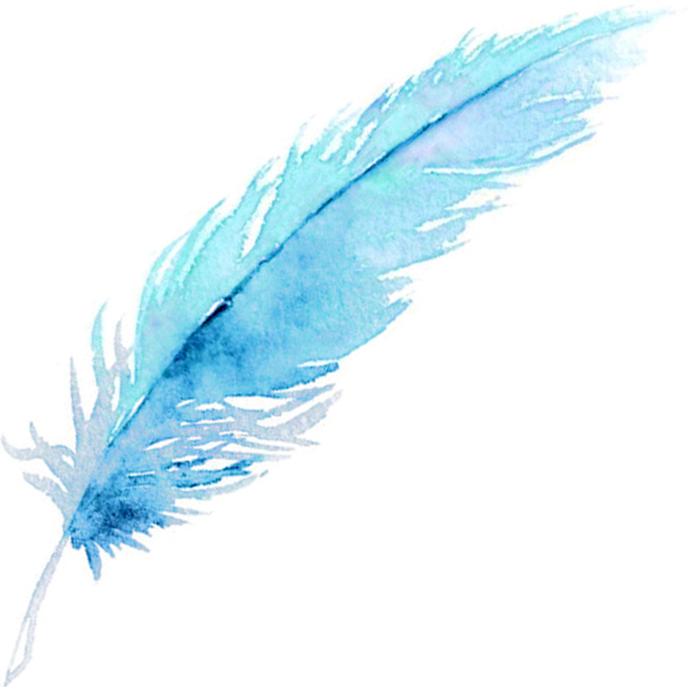

FOUNDER
Founder's Philosophy
Quism Art & Culture Research House symbolizes the human physical body—the living space in which we exist from birth to death; within this body, mind and sensation evolve, becoming the respective sources of art and culture; in Quism, every form exists with an underlying formula, representing the unconscious mind and the cycles of nature; from the first life on Earth to the path of self-realization, existence unfolds through an eternal birth process carried forward across generations, forming the foundation of human continuity;
At the Zero Hour of gestation, the structure of body cells and the development of the mind begin together, echoed in the rhythmic resonance of brain neurons; during this phase, dreams and inner reflections emerge as guides, aligned with natural law; just as carbon transforms into diamond, emerald, or crystal through time and pressure, human life is refined through discipline and self-regulation; energy and vitality are cultivated through inner balance, guiding humanity through conflict toward clarity and fulfillment, while nature remains stable within its own order;
The established birth cycle advances through the harmony of elements and senses, acting as a mediator of life itself; in a meditative body, life-waves are felt as continuous vibrations of energy, where transformation and growth never cease; past and future depend upon a pulsating present, sustained by a fundamental force always engaged in action and evolution; attention to life’s rhythm becomes reverence for this universal energy, where thought dissolves into awareness and silent understanding matures into wisdom;
Life is founded like a seed that becomes a seed-tree, symbolizing the complete life cycle; conscious and unconscious states complement one another, reflecting energy, vitality, and the endurance of solitude; from the darkness of the womb, humanity transcends compromise and limitation, moving beyond fear into awareness; dreams, mysteries, and inner visions guide life forward, revealing meaning within the tension between mortality and immortality;
In Quism, art and culture arise from the refinement of the body and its cellular intelligence; body, mind, and consciousness represent life, nature, and energy, while dreams unfold as integral expressions of existence; the first life on Earth evolves into a global family, where natural resources and technology align to unite humanity; self-realization emerges through this harmony, just as Earth itself remains rhythmic and stable under the balance of energy and vitality;

0

'The recreation of creation signifies self-realization—one that conveys experience, not a message'

0